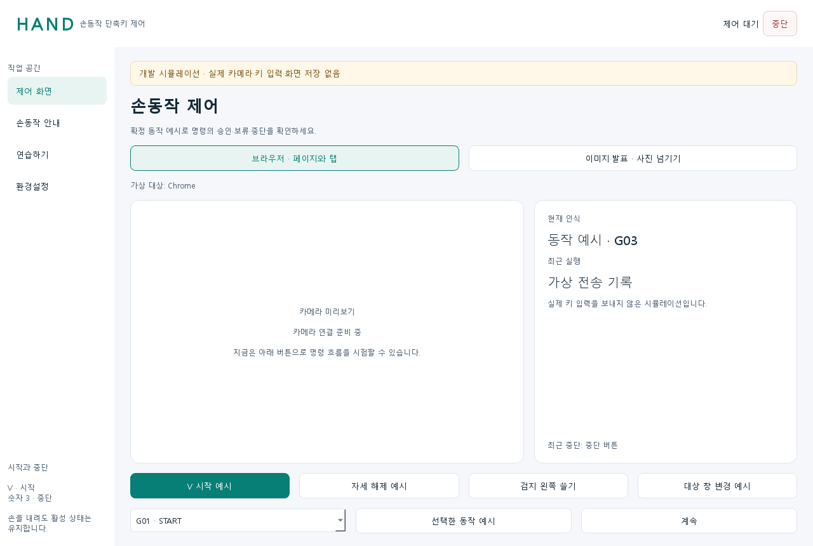

M01 · D01–D05
기반·시뮬레이션 구현 및 검증 완료. 실제 카메라·Windows 키 입력·이미지·캡처는 다음 단계입니다.
- Python 3.12.10 전용 가상환경과 정확한 의존성 lock, 모델 SHA-256 확인.
- 불변 계약, 가상 시계·FIFO 스케줄러·ID, 생성자 주입과 Qt 없는 코어.
- WAITING/ACTIVE·180ms 재무장, 명령 시효·중복·대상·모드 검사, STOP과 키 해제 ACK, 복수 오류 정책.
- 전체 손동작→의미 명령 연결표. 가짜 키 실행기와 명시적 결과를 요구하는 CONTROL 재생.
- Qt 기본 화면·작은 단위 시뮬레이션·인식/최근 실행/중단 이유 분리. 미구현 기능은 준비 중으로 표시.
자동 시험 58개 통과. CONTROL 픽스처 10회 결정성, Qt offscreen 시작/종료, 한글 글꼴과 화면 표시 확인. 실제 Chrome/손 인식/배포본 시험은 미실행입니다.
M01 검증 요약 · 환경·모델 기록 · 실제 Red/Green 실행 이력 · 58개 시험 출력

실행
저장소의 start_simulated.bat를 실행합니다. ‘V 시작 예시’ → ‘자세 해제 예시’ → 180ms 이상 대기 → ‘검지 왼쪽 쓸기’로 가짜 전송을 확인할 수 있습니다. 실제 Chrome는 움직이지 않습니다.
.venv\Scripts\python.exe scripts/validate.py --label local-check
.venv\Scripts\python.exe run.py --mode DEV_SIMULATED
.venv\Scripts\python.exe run.py --replay tests/fixtures/control/back_once다음 작업: D06 전경 Chrome 판별·전역 F8, D07 실제 키 조합·실패 정리, D08 비활성 상태창, D09 실제 Chrome 전체 키 효과, D10 초기 실행 파일 검증.
M02 · D06–D10 · 구현 / 실기 일부 미완료
Windows 입력 경로와 초기 패키징을 구현했습니다. 전체 게이트 통과는 보류합니다. 자동 시험 92개 통과. 실제 Chrome에서 뒤로/앞으로, 페이지 위/아래, 확대/축소, 새로고침의 7개 효과를 확인했습니다. 입력은 확정 동작을 주입한 시험이며 실제 손 인식은 아직 연결하지 않았습니다.
- 전경 창·프로세스 판별, 직렬 입력 worker, 부분 전송과 소유 키 해제, 중단·세대 취소.
- 전역 F8 등록/충돌/해제, 비활성 작은 상태창, 실제/가짜 입력 모드 분리.
- 고유 staging·정제 PATH의 실행 파일 빌드와 번들 시작/자원 확인.
Chrome 탭 준비 중 조작 도구가 현재 URL을 확인하지 못해 해당 세션이 중단됐습니다. 탭 이동·복구, 북마크, 실제 F8 중단, 작은 상태창 클릭의 포커스 유지, 한/영 입력 환경별 확인을 남겨두었습니다. 새 PC 검증도 아직 수행하지 않았습니다. 코드·자동 시험 완료와 실기 완료를 구분합니다.
M02 상세 검증·미완료 목록 · 요약 JSON · 92개 시험 결과 · 초기 실행 파일 빌드 결과
다음 순서: M02 남은 실기 게이트 확인 → D11–D15 카메라 프로세스·추적·V/3·실손 뒤로가기. 이후 이미지·캡처·설정·연습·최종 사용자 검증까지 D40 계획을 유지합니다. 5 MD는 계획 범위이며 실제 5일 작업을 의미하지 않습니다.
M03 · D11–D15 · 카메라와 기본 손 인식 구현
HTML 문서가 아닌 PySide6 Windows 앱입니다. 카메라 자식 프로세스, MediaPipe VIDEO·최대 두 손, 안정된 손 ID, 10fps 반전 미리보기, V 시작·숫자 3 중단·검지 좌우 쓸기를 연결했습니다. 제어 코어는 Qt/MediaPipe/Win32에 의존하지 않습니다.
실제 자식 프로세스의 read/release 불응과 강제 종료, 10회 LANDMARKS 재생, 유지 시간 경계·유실·epoch·시효·방향을 확인했습니다. 카메라 1에서 209프레임·시작 후 21.57fps, 정상 종료 1.328초를 측정했습니다. 5분/20분 성능 게이트의 결과는 아닙니다.
사용자는 작은 상태창 중단 시 Chrome 유지·대기 전환과 카메라 상태/인식 문구 변화를 확인했습니다. 실손 시험의 확정 이벤트 기록은 없으므로 손동작→Chrome 실제 효과 통과로 처리하지 않습니다. 공개 모델 표본에서 발견한 엄지 MCP 접힘 누락과 종료 ACK 상태 누락을 Red→Green으로 수정했습니다.
M03 범위·남은 검증 · 137개 회귀 결과 · 실제 카메라 · M02 추가 Chrome·사용자 검증
M02 탭 좌우/복구·북마크·보류·F8·상태창 표시 포커스 실기는 추가 확인했습니다. 상태창 계속 버튼·한/영 배치별 줌·새 PC 검증은 남아 있습니다. M03 실손 전후 Chrome 효과도 다음 검증 대상으로 유지합니다. M04는 G05–G14 인식, D21 이후 이미지·캡처·설정·연습입니다.
계획의 5 MD 범위를 구분한 기록이며 실제 5일 소요를 뜻하지 않습니다. 실행별 실제 시간은 TDD 이력에 있으며 사람의 MD·예비일은 사용한 것으로 환산하지 않았습니다.
M04 · D16–D20 · 전체 손동작 인식과 실제 실행 파일
G01–G14 인식 경로를 연결했습니다. V 좌우/위아래로 탭·페이지, 양손 집기로 한 단계 줌, 검지 원으로 새로고침, 엄지 유지로 북마크 창, 주먹→펼침으로 탭 복구를 요청합니다. L은 캡처 요청까지 인식하며 실제 저장은 다음 단계로 남깁니다.
| 계획 | 구현·검증 |
|---|---|
| D16 · V 방향 | 4% 축 잠금·15% 확정, 대각선/중간 축 변경 거절. |
| D17 · 양손 줌 | 120ms 기준·1.15 비율·80ms 유지, 집기 히스테리시스·중복 방지·손 유실. |
| D18 · 원 | 양방향 원·반지름·닫힘·시간. 시작각 8종, 큰 원의 오쓸기 재현 후 수정. |
| D19 · 엄지/주먹 | 엄지 600ms, 주먹 250ms→1.2초 내 펼침 150ms. 보류/중단 정책 연결, 불연속 유지 누적 방지. |
| D20 · L·통합 | 방향·각도·간격·800ms, 숫자3 우선, 양손 V 거절, FakeCapture만 적용. |
14개 확정·4개 거절 랜드마크 픽스처를 10회 반복했고 12개 동작의 실제 Controller→RecordingKeyboard/FakeCapture 연결을 검증했습니다. 소스 실행의 카메라 종료와 키 해제 ACK도 정상 확인했습니다.
고유 폴더에 새 실행 파일을 빌드했습니다. 번들 Qt·라이브러리·모델 해시 검사 통과. 실행 파일 자체의 실제 카메라 검사에서 166프레임, 시작 후 29.93fps, 최초 프레임 9.453초, 정상 종료 812ms, 오류 0을 확인했습니다. 짧은 개발 PC 시험이며 새 PC/5분 성능/20분 안정성 검증을 대체하지 않습니다.
실제 HAND 앱 실행 · M04 세부 기록 · 187개 시험 출력 · 빌드·파일 해시 · 번들 실제 카메라
사용자의 이전 상태/문구 확인을 실제 손→Chrome 효과 성공으로 확대하지 않습니다. 수정 후 재시험 응답과 확정 이벤트가 아직 없어 해당 게이트는 대기입니다. 상태창 계속의 실제 클릭, 한/영 배치별 줌, Python 없는 별도 Windows PC, 3명 평가도 남아 있습니다. 이미지·실제 캡처·설정·연습은 D21 이후에 구현합니다.
M03 커밋 38a7d8a와 별도로 M04 검증 커밋을 남깁니다. 5 MD는 계획 범위 구분이며 실제 5일 공수로 환산하지 않았습니다. 이력의 Red 실패를 삭제하지 않고 Green과 함께 보존했습니다.
M04 후속 · 사용자 시작/확정 실패 조사
사용자가 실제 제어 시작 또는 확정 실패를 보고해 실손 게이트를 실패/재시험 대기로 갱신했습니다. 현재 영상에는 천장·벽이 보이고 손 검출이 0이었습니다. 카메라와 실행 파일 시작은 정상이며 공개 V 표본 46프레임의 VIDEO 처리에서 G01이 한 번 발생했습니다. 이것으로 사용자의 이전 실패 원인을 전부 설명하거나 해결 완료로 선언하지 않습니다.
제가 숨긴 상태로 실행해 남긴 이전 앱이 F8를 차지하고 있어 해당 프로세스만 정리했습니다. 진단 앱 하나에서 F8 등록 성공을 확인했습니다. 수동 시험 중 앱이 시간 제한으로 사라지지 않게 진단 도구를 변경했고, 영상·손 좌표 없이 자세/관절 각도/프레임 공백 수치만 제한적으로 기록합니다. 앱 인식 임계값은 근거 없이 변경하지 않았습니다.
실손 후속 확인 · V 시작 성공
사용자가 카메라 영상·초록색 관절 표시와 V 유지 후 제어 중 전환을 확인했습니다. 실제 진단 기록에도 G01 확정이 남았습니다. G07 위로 쓸기도 인식됐으나 Chrome가 전경이 아니어서 TARGET_NOT_CHROME으로 정상 보류됐습니다. 손 검출·V 활성화는 확인했으며 실제 Chrome 페이지 변화는 별도 확인 대상으로 남깁니다. 사람별 정확도 검증 전체를 통과했다는 의미는 아닙니다.
2026-11-17 · 검지 쓸기 인식 보정
사용자가 검지를 펴고 왼쪽으로 움직일 때 불확실 안내로 바뀌는 문제를 보고했습니다. 엄지가 중간 각도이면 전체 자세가 UNKNOWN이 되는 조건과, 자세를 만든 순간부터 이동 시간을 계산해 기다린 뒤 쓸기를 거절하는 조건을 확인했습니다. 다른 네 손가락이 명확할 때 INDEX에만 엄지 145° 보조 기준을 적용하고, 실제 이동이 시작된 때부터 시간을 계산하도록 수정했습니다. 화면 안내도 검지 인식/엄지/검지 모호함/느린 이동을 구분합니다.
실패 재현 10개 → 관련 회귀 88개 → 전체 206개 통과. 중간 Green 시도의 145° 부동소수 경계 실패도 보존했습니다. 합성 랜드마크 시험이며 사용자의 손 좌표 재생이나 사람별 정확도 측정은 아닙니다. V/숫자3, 명확한 L, 작은 손, 비활성 상태, UNKNOWN의 이전 경로 취소와 원/쓸기 충돌을 함께 검사했습니다.
실패 재현 · 206개 시험 결과 · 수정·실행 파일 검증 기록 · 수정 앱 실행
이번 작업은 M03/M04의 오류 수정이며 새로운 5 MD 범위 완료로 계산하지 않습니다. 수정 실행 파일의 실손→Chrome 페이지 변화는 사용자 재시험 대상으로 남깁니다.